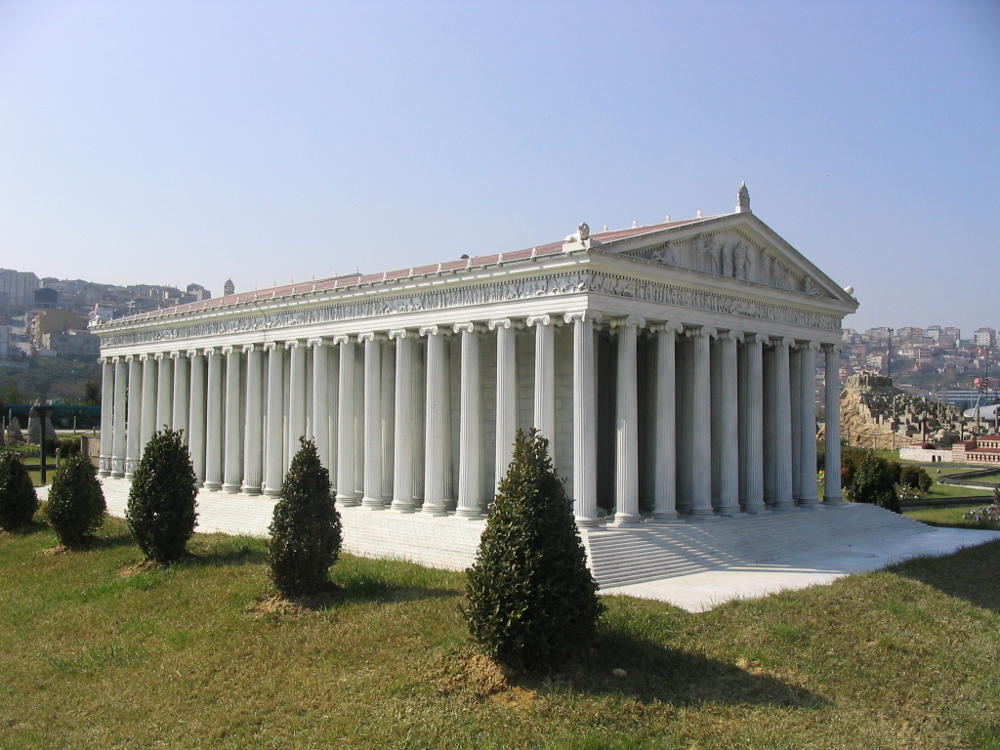

Temple of Artemis

The Temple of Artemis or Artemision also known less precisely as the Temple of Diana, was a Greek temple dedicated to an ancient, local form of the goddess Artemis. It was located in Ephesus (near the modern town of Selçuk in present-day Turkey). It was completely rebuilt three times, and in its final form was one of the Seven Wonders of the Ancient World. By 401 AD it had been ruined or destroyed.[1] Only foundations and fragments of the last temple remain at the site.
The earliest version of the temple (a temenos) antedated the Ionic immigration by many years, and dates to the Bronze Age. Callimachus, in his Hymn to Artemis, attributed it to the Amazons. In the 7th century BC, it was destroyed by a flood. Its reconstruction, in more grandiose form, began around 550 BC, under the Cretan architect Chersiphron and his son Metagenes. The project was funded by Croesus of Lydia, and took 10 years to complete. This version of the temple was destroyed in 356 BC by Herostratus in an act of arson. The next, greatest and last form of the temple, funded by the Ephesians themselves, is described in Antipater of Sidon's list of the world's Seven Wonders:
I have set eyes on the wall of lofty Babylon on which is a road for chariots, and the statue of Zeus by the Alpheus, and the hanging gardens, and the colossus of the Sun, and the huge labour of the high pyramids, and the vast tomb of Mausolus; but when I saw the house of Artemis that mounted to the clouds, those other marvels lost their brilliancy, and I said, "Lo, apart from Olympus, the Sun never looked on aught so grand".
The Temple of Artemis was located near the ancient city of Ephesus, about 75 km south from the modern port city of İzmir, in Turkey. Today the site lies on the edge of the modern town of Selçuk.
The sacred site (temenos) at Ephesus was far older than the Artemision itself. Pausanias was certain that it antedated the Ionic immigration by many years, being older even than the oracular shrine of Apollo at Didyma.[3] He said that the pre-Ionic inhabitants of the city were Leleges and Lydians. Callimachus, in his Hymn to Artemis attributed the earliest temenos at Ephesus to the Amazons, whose worship he imagined already centered upon an image (bretas) of Artemis, their matron goddess. Pausanias says that Pindar believed the temple's founding Amazons to have been involved with the siege at Athens. Tacitus also believed in the Amazon foundation, however Pausanias believed the temple predated the Amazons.[4]
Modern archaeology cannot confirm Callimachus's Amazons, but Pausanias's account of the site's antiquity seems well-founded. Before World War I, site excavations by David George Hogarth identified three successive temple buildings.[5] Re-excavations in 1987–88[6] confirmed that the site was occupied as early as the Bronze Age, with a sequence of pottery finds that extend forward to Middle Geometric times, when a peripteral temple with a floor of hard-packed clay was constructed in the second half of the 8th century BC.[7] The peripteral temple at Ephesus offers the earliest example of a peripteral type on the coast of Asia Minor, and perhaps the earliest Greek temple surrounded by colonnades anywhere.
In the 7th century BC, a flood[8] destroyed the temple, depositing over half a meter of sand and flotsam over the original clay floor. Among the flood debris were the remains of a carved ivory plaque of a griffin and the Tree of Life, apparently North Syrian, and some drilled tear-shaped amber drops of elliptical cross-section. These probably once dressed a wooden effigy (xoanon) of the Lady of Ephesus, which must have been destroyed or recovered from the flood. Bammer notes that though the site was prone to flooding, and raised by silt deposits about two meters between the 8th and 6th centuries, and a further 2.4 m between the sixth and the fourth, its continued use "indicates that maintaining the identity of the actual location played an important role in the sacred organization".[9]
Back to